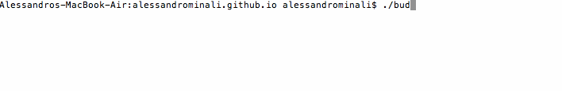
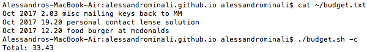

Wed 04 Oct 2017
Reading time: (~ mins)
Keeping track of the money I spend is always a struggle. As I have begun solving more and more of my problems via command line tools I thought I'd tackle this one as well. This solution will be ideal because it'll provide a less tedious interface than manipulating a mouse to navigate and enter in what should be pretty simple information per expense. Also because I'm always already zipping around in my terminal!
The holy grail here will be a bash shell script that will allow me to enter expenses and quickly get a calculation of how much has been spent. Let's get started!
#!/bin/bash
set -e
filename=~/budget.txt
echo "Entries in the form of: <VALUE> <CATEGORY> <COMMMENT (optional)>"
while true
do
read statement
echo `date "+%b %Y"` $statement >> $filename
done
Saving that file as budget.sh and making it executable with:
chmod 777 ./budget.sh
And that's the bare minimum we need to track expenses from terminal!
Crazy huh? of course you can make it smaller, but let's step through what we have first.
Line 1: Convention telling the *nix shell which interpreter to run, in our case it should be bash
Line 3: Error out if something bad happens rather than continue executing. More details here
Line 5: Declare our file variable. We will need this as the script grows
Etc: We loop infinitely reading in user input to $statement and we append the line with a date stamp to our log file. To exit the user must force quit (control+C). For each expense I care about the month and year it is entered, so we call:
date "+%b %Y" # returns date in the form of 'Oct 2017'
This code easily files our expenses but I don't feel like having to manually go and add up how much I've spent. We'll extend our tool to do this for us!
year=`date +"%Y"`
calculate=false
while getopts ':c' opt; do
case $opt in
c)
calculate=true
;;
\?)
echo "Usage: ..." >&2
exit 1
;;
:)
echo "Option -$OPTARG requires an argument." >&2
exit 1
;;
esac
done
if $calculate
then
total=`grep -i "$year \d" $filename | awk '{print $3}' | paste -sd+ - | bc`
echo "Total: $total"
else
echo "Entries in the form of: "
while true
do
read statement
echo `date "+%b %Y"` $statement >> $filename
done
fi
To ask for a calculation our tool with take a -c flag parameter. getopts is a useful program that allows us to handle these flags. At this point we only handle -c and set a variable to true, as well as handle the two error cases that come with flag params (invalid flag and/or missing required parameters).
If $calculate is found to be true then we find all entries for the current year and print out the results. Here is a useful command breakdown of line 27. My quick summary: grep case insensitive by $year that is followed by a numerical value in the next column from $filename, pass that to awk to grab the third column (which in our case corresponds to the numerical values we have logged), pass that to paste which joins each value together with "+" signs and pass that to bc which performs the calculation! Whew!
Here it is in action:
The last step is to allow us to run it from any directory. This can be done by moving the file into $PATH. There are few ways to do this. To see all folders on your executing path use this:
tr ':' $'\n' <<< $PATH
Simply move your file into any of these folders, I usually put it into /usr/local/bin. Reset all terminal sessions and now you should be able to call budget.sh anywhere and without the leading ./
That's all the functionality I'll discuss in this blog post. Feel free to add more features as you see fit. I personally added the ability to overwrite the last line (cause I make spelling mistakes), the ability to show all the items tallied up in a calculation, and the ability to specify month and/or year to calculate on! You can view the full implementation I personally use here!
Best of luck to myself and hopefully this method finally gets me logging and paying attention to how much money I toss around every which way.